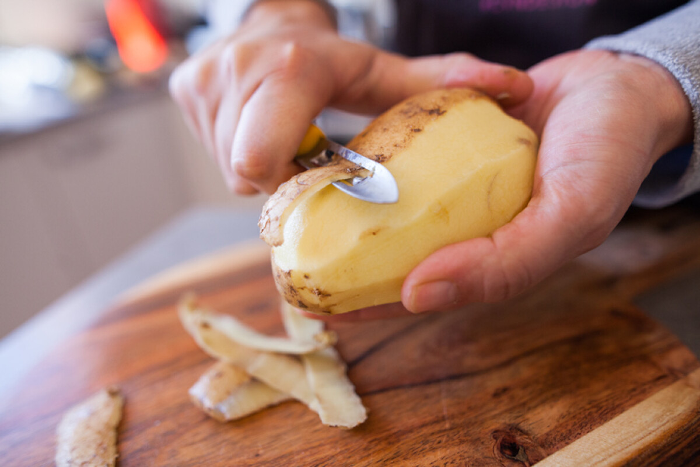

Krumplipucolásról alapvető tudnivalók
- A krumplipucolás lényege hogy a krumplit megpucoljuk
- Lehet sok féle képpen csinálni de a lényege mindig ugyan az
- Ha a pucolás közbe nem jön le a héjja akkor valamit rosszul csinál
- A rossz krumplit is meg lehet pucolni de attól nem lesz jó
- A digitális és nyomtatott krumplit nem ajánlott megpucolni

Krumpli története
- Körülbelül 7000 éve fogyasztják.
- Európába a 16. században került.
- Magyarországra 1650 körül jöhetett be.
- Peru és Chile hegyvidékén őshonos.
- Tájnyelvi nevei: krumpedli, krumpi, kolompér, kompér, kolompír, korompér, krompér, gruja, földialma, svábtök, földitök vagy pityóka